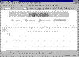
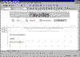

| ||||
The fourth page in your FrontPage-based Web site will consist of a brief list of hyperlinks that point to other sites on the World Wide Web. After taking the FrontPage tutorial, you can customize this page by changing the hyperlinks to those of your favorite Web sites.
Figure 1. The Open button
The Open dialog box is displayed.
The Favorites page is displayed in the FrontPage Editor.
When the Favorites page is opened in the FrontPage Editor, note the page elements that have been applied by the FrontPage theme.
Your page should now look like this:

Click image to enlargeFigure 2. Editing the Favorites page
Next, you will add hyperlinks on the current page. A hyperlink is a pointer from text or from an image to a page or other type of file on the World Wide Web. On World Wide Web pages, hyperlinks are the primary way to navigate between pages and among Web sites.
You will create the first hyperlink from descriptive text, using the FrontPage Editor's Hyperlink command.
The Create Hyperlink dialog box is displayed. In this dialog box, you can select the target of the hyperlink. This can be a page or a file in your current FrontPage-based Web site, on your local file system, on another Web server, or on the World Wide Web. You can also create an e-mail hyperlink (which you will learn in Lesson 2).
"http://" stands for Hypertext Transport Protocol. This is the Internet protocol that allows World Wide Web browsers to retrieve information from Web servers. "www.msn.com" is the URL of "The Microsoft Network." To learn more about URLs, see "Welcome to the World Wide Web" .
The words "The Microsoft Network" have changed from black default text to colored text and the words are now underlined to indicate the hyperlink. When this page is displayed in a Web browser, clicking this hyperlink will retrieve and display the home page of The Microsoft Network. The color and appearance of the hyperlink on this page is derived from the theme you applied earlier in this lesson.
Next, you will create an automatic hyperlink. This method of creating hyperlinks is quick and easy, because it lets you bypass the Create Hyperlink dialog box.
"Yahoo!" is a popular Internet service that lets you look for information on the World Wide Web using search keywords.
As soon as you press the ENTER key, the URL you just typed changes from black to colored text and the address is underlined to indicate the hyperlink. FrontPage, a member of the Office 97 family of products, supports automatic hyperlink creation.
Since a URL by itself is not always very descriptive, however, you will want to change it to the name of the site the hyperlink points to. You can overtype the text without erasing the hyperlink.
The hyperlink still points to the same URL, but it is now labeled with the site's name.
Next, you will create a hyperlink using your Web browser. This method of creating hyperlinks is the most accurate, because you actually visit the page the hyperlink will point to.
Note: If you do not have access to the World Wide Web while taking the FrontPage tutorial, you should skip the exercise on the following page and proceed to the next section, "Previewing the Personal Web."
The Create Hyperlink dialog box is displayed.
Figure 3. The World Wide Web button
The FrontPage Editor launches your Web browser. When you visit the page that the hyperlink should point to and then switch back to FrontPage, the URL field will contain the address of the target page.
The Web browser displays the Microsoft FrontPage home page, where you can learn more about FrontPage, download new software, and find solutions to common questions.
The URL of the Microsoft FrontPage home page is now entered into the URL field in the Create Hyperlink dialog box.
The words "Microsoft FrontPage" are now underlined to indicate the hyperlink.
Your page should now look like this:

Click image to enlargeFigure 4. Adding hyperlinks
Figure 5. The Save button
Did you find this material useful? Gripes? Compliments? Suggestions for other articles? Write us!
© 1999 Microsoft Corporation. All rights reserved. Terms of use.